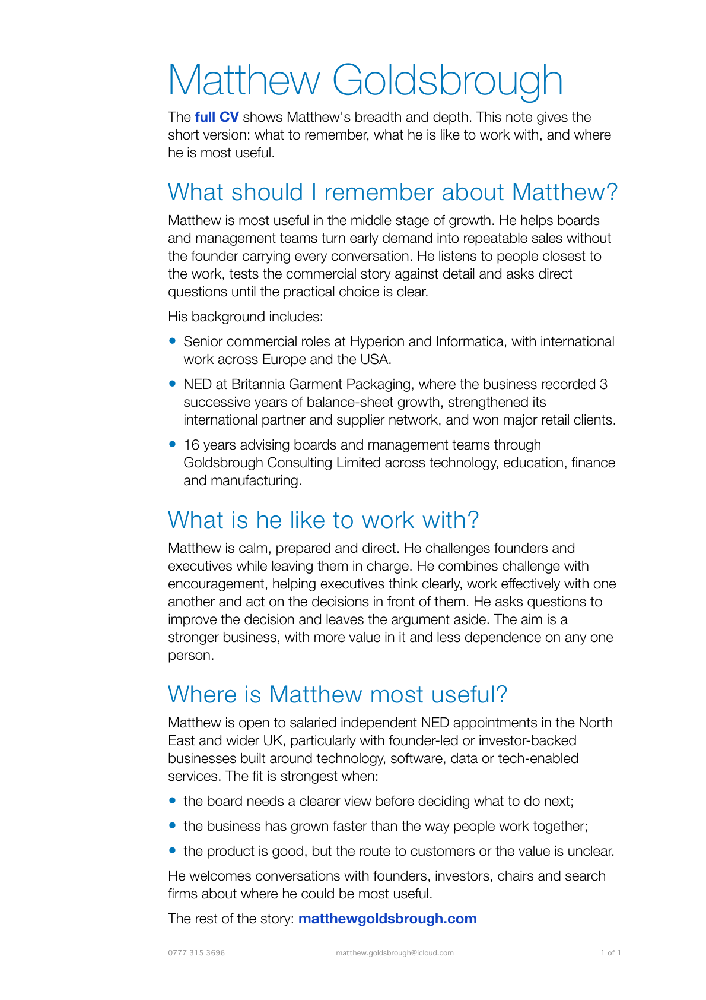

PDF, 38 KB
Matthew Goldsbrough: one-page profile
Updated August 2026. A concise view of Matthew's experience, working style and the situations where his independent commercial judgement is most useful.
One-page profile
A short, forwardable introduction for founders, investors, Chairs and search firms considering where Matthew could be most useful.

PDF, 38 KB
Updated August 2026. A concise view of Matthew's experience, working style and the situations where his independent commercial judgement is most useful.